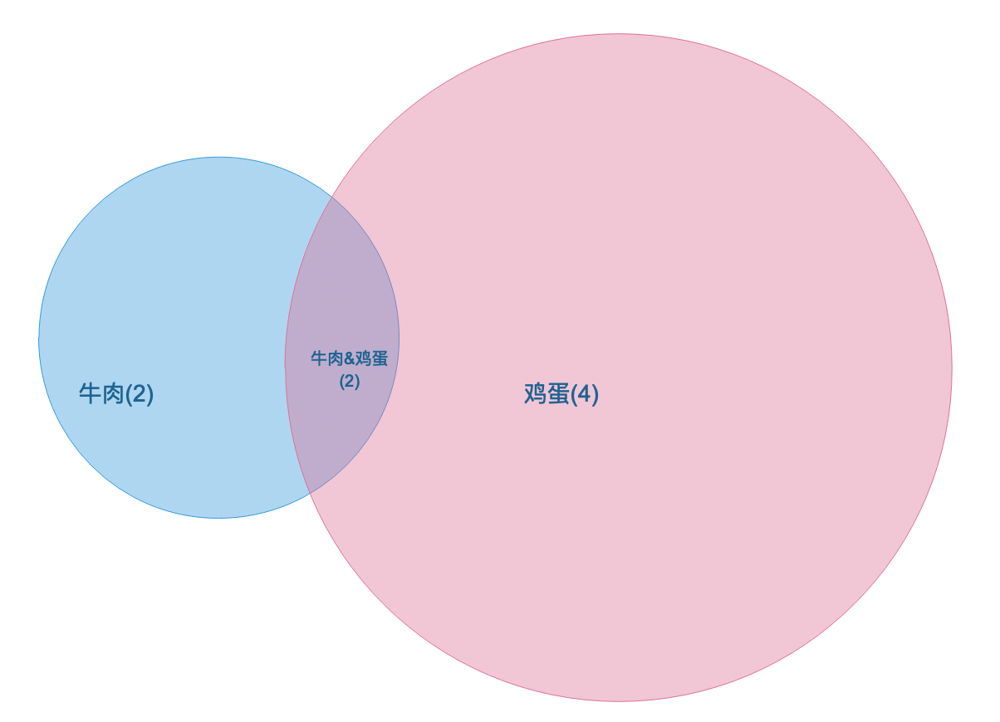
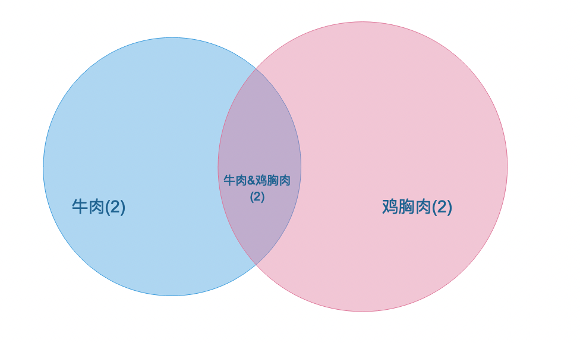
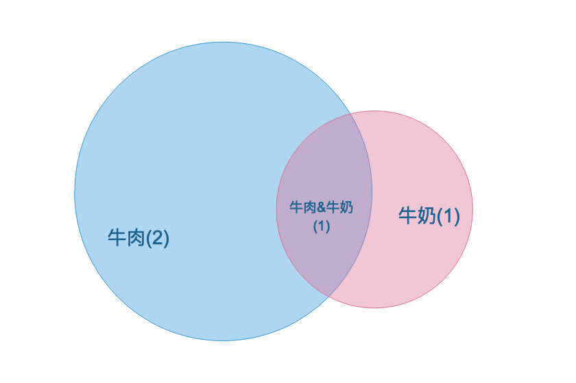
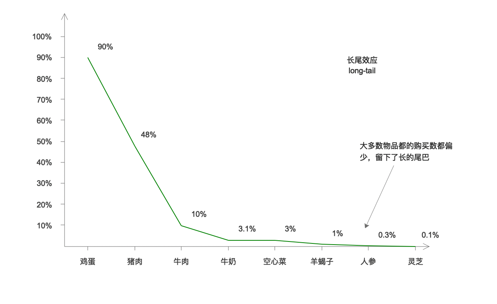
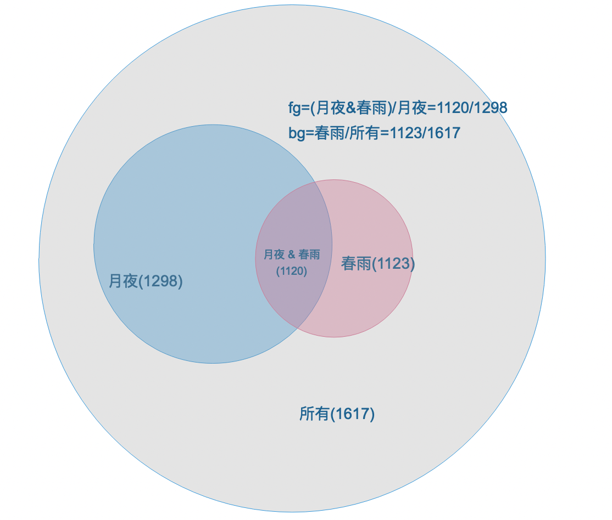

..
推荐系统 101
从前面一篇文章，我们可以了解到一些基本的概念，非常重要的几个点为
概念回顾
推荐过程
graph LR;
input([原始数据
亿/千万]) callback(召回
万/千); sort(排序
千/百); filter(调整
百/十); output([结果
十]) input-->callback-->sort-->filter-->output
亿/千万]) callback(召回
万/千); sort(排序
千/百); filter(调整
百/十); output([结果
十]) input-->callback-->sort-->filter-->output
召回的方式
这里的 i 为 item，可以理解为音频，u 为 user，也就是用户，2 为 to
| 路劲 | 解释 | 例子 | 方法 |
|---|---|---|---|
| i2i | 你看了itemA,推荐给你itemB | 头条的相似文章推荐 | item相似度, 协同过滤 和 关联规则(比如人工标注) |
| u2i | 用户的直接行为 | 点击过的内容但是未购买的商品, 很容易产生购买行为 | 用户行为数据 |
| u2i2i | 将 u2i 得到的结果, 推荐给新的用户 | N/A | |
| u2u2i | 用户聚类，获得相似的用户，再根据用户的推荐给当前用户 | 相同年龄/性别的用户, 相同点击行为的用户推荐相似的内容 | 用户聚类, 用户行为，来进行 u2u 部分 |
| u2tag2i | 先算出用户的tag, 在匹配 tag 和 item 的关系 | 豆瓣, B站的 tag, tag效果比较好, 内容不会扩展 | |
| u2***2i | 基于图的算法 |
版本1: 基于协同算法的 member-media 相似度计算
member 和 media 的矩阵计算
在我们最初的版本, 我们计算的是每一个 member 和 每一个 media 的相似度。
| 用户/item的评分 | 哈利波特 | 流水白噪声 | 小提琴音乐 |
|---|---|---|---|
| 用户A | 0.8 | 0.9 | 0.12 |
| 用户B | 0.1 | 0.19 | 0.5 |
具体的计算方式为
graph LR;
vector1(计算 media 的矢量 v1)
vector2(计算 member 的矢量 v2);
multiply(计算 v1 和 v2 的余弦相似度);
record([记录 member 和 media 的分数])
vector1-->vector2-->multiply-->record
graph LR;
mv(media 的矢量 v1)
mv1(media标签: 减压/助眠);
mv2(老师: 黄华/小花);
mv3(类型: 故事/白噪声)
mv4(isBetterSleep = 1
isRelax = 0
isMasterHH = 1
isStory = 1) mv-->mv1 & mv2 & mv3 -->mv4
isRelax = 0
isMasterHH = 1
isStory = 1) mv-->mv1 & mv2 & mv3 -->mv4
可以得到 media 的矩阵如下:
同理，如果某个用户听过某个 media，则 media 的所有的矩阵属性，则会添加到用户的矩阵中
graph LR;
mv(member 的矢量)
mv1("用户试听了【黄华老师】的【故事】");
mv2(isMasterHH = 1
isStroy = 1); mv-->mv1 --> mv2
isStroy = 1); mv-->mv1 --> mv2
我们通过余弦相似度可以计算:
可以得到一个 (0 到 1) 的一个值
协同过滤的优缺点
优点
- 解解释性强, 计算出矩阵，可以解释为什么会给 A用户 推送 B视频
- 本身计算方式简单，效果比较好
缺点
- 计算量大，需要全量计算用户和每个音频之间的关系, 而且很多计算是不必要的
- 由于用户的体量 远大于 音频的体量，所以不考虑计算 用户和用户 之间的相似度，来进行用户的协同推荐
- 用户之间的标签无法使用，无法进行群体数据下的推荐
版本2: 基于 ES 的算法推荐
一个购物车推荐的例子
| 购物车1 | 购物车2 | 购物车3 | 购物车4 |
|---|---|---|---|
| 鸡蛋 | 鸡蛋 | 鸡蛋 | 鸡蛋 |
| 苹果 | 苹果 | ||
| 香蕉 | |||
| 牛奶 | 牛奶 | ||
| 牛肉 | 牛肉 | ||
| 鸡胸肉 | 鸡胸肉 | ||
| 菠菜 |
如果说加入用户买了 牛肉，应该推荐什么呢? 我们从购物车可以看到 购物车3 和 购物车4 都包含了牛肉。买了牛肉的人他们也买了 下面的东西:
| 食物 | 总数 |
|---|---|
| 鸡蛋 | 2 |
| 鸡胸肉 | 2 |
| 牛奶 | 1 |
所以，我们应该推荐 【鸡蛋】 和 【鸡胸肉】，但是实际上，所有的人都买了【鸡蛋】
上述的方式，只考虑了总数，容易产生一种偏差，即：推荐的东西永远都是热门的，而不是真正的用户最喜欢的
用 venn 图来表示
|  |  |  |
Jaccard 相似度
| 食物1 | 食物2 | 相似度 |
|---|---|---|
| 牛肉 | 鸡胸肉 | (2)/(2+2)=0.5 |
| 牛肉 | 鸡蛋 | (2)/(2+4)=0.333 |
| 牛肉 | 牛奶 | (1)/(2+1)=0.333 |

在使用 Jaccard 相似度的时候，会导致一些比较偏门的东西一旦重复买了，则会使得对应的相似度很高。如在这个例子里面, 牛奶,鸡蛋 和 牛肉的相似度是一样的
| 食物1 | 食物2 | 相似度 |
|---|---|---|
| 牛肉 | 鸡蛋 | (2)/(2+4)=0.333 |
| 牛肉 | 牛奶 | (1)/(2+1)=0.333 |
Significant Terms Aggregation
回到我们的音频推荐，其实和购物车的推荐是一样的，在 es 中，我们可以很轻松地得到所有音频的试听的数量
GET /es_device/_search
{
"query": { "match_all": {} },"size": 0,
"aggs": {
"listened": { "terms": { "field": "listenedMediaIds" } }
}
}
##
{
"key" : "【冥想】【助眠】25分钟·月夜安睡",
"doc_count" : 1298
},
{
"key" : "【冥想】【助眠】30分钟·深度睡眠",
"doc_count" : 1293
},
{
"key" : "【故事】给圣诞老人的信",
"doc_count" : 1238
}
同样，如果我们只考虑总数，那么只会使得经常命中的是 「热门音频」
在 ES 中，提供了 significant terms 的聚合方式
GET /es_device/_search
{
"query": { "【冥想】【助眠】25分钟·月夜安睡" },"size": 0,
"aggs": {
"listened": { "significant_terms": { "field": "listenedMediaIds" } }
}
}
##
"doc_count" : 1298, # 听了月夜安睡的人
"bg_count" : 1617, # 所有的音频的试听数
{
"key" : "【白噪音】【专注】 春雨",
"doc_count" : 1120, # 听了 月夜安睡 的人中，有 1120 听了春雨
"bg_count" : 1123 # 总共有 1123 个人听了春雨
},
{
"key" : "【故事】摇篮曲",
"doc_count" : 1085, # 听了 月夜安睡 的人中，有 1085 听了摇篮曲
"bg_count" : 1089 # 总共有 1123 个人听了摇篮曲
}
| 音频1 | 音频2 | 音频1 & 音频2 |
|---|---|---|
| 月夜安睡(1298) | 春雨(1123) | 同时听了月夜安睡和春雨(1120) |
| 月夜安睡(1298) | 摇篮曲(1089) | 同时听了月夜安睡和春雨(1085) |
在 ES 中，他的计算分数的默认算法是 JLH
(fgPercentage / bgPercentage) * (fgPercentage - bgPercentage)
其中 fg 代表 foreground, bg 代表 background

分数为 (fg / bg) * (fg - bg) = 0.20918870031071285
落地方案
graph LR;
record([统计用户数据])
record1([用户标签])
record2([用户听过的音频])
record3([用户喜欢的音频])
record4([用户听过的老师])
record-->record1 & record2 & record3 & record4 -->查询和该用户相似行为或者标签的用户数据-->聚合数据并展示
如果为空数据用户，则返回 「最热的音频」给用户即可